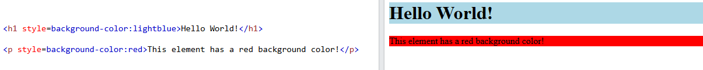
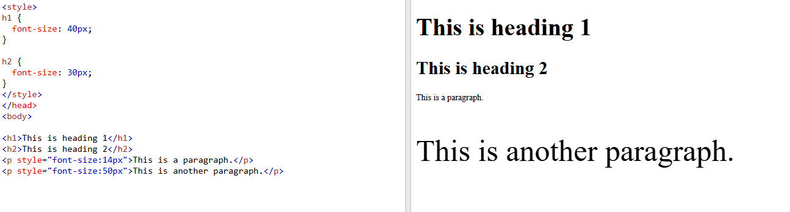
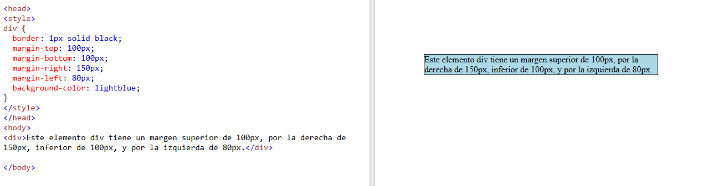
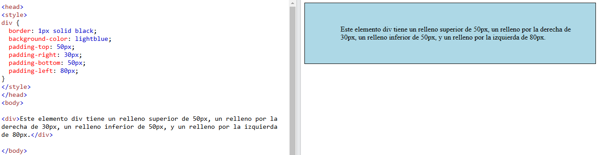

Color
Sirve para darle color al texto que se va a mostrar. La forma de incluirlo es con style="color:nombre del color o código hexadecimal" dentro de la etiqueta que deseemos.
Ejemplo de texto con colores:

CSS significa "hojas de estilo en cascada" y es el lenguaje que usaremos para darle un estilo determinado a nuestra página web. Nos ayuda a definir cómo se van a ver los elementos en la versión final de nuestro sitio. Está estrechamente ligado al atributo style.
Si lo prefieres Descarga en versión PDF
Vamos a ver ejemplos de propiedades de CSS:
Sirve para darle color al texto que se va a mostrar. La forma de incluirlo es con style="color:nombre del color o código hexadecimal" dentro de la etiqueta que deseemos.
Ejemplo de texto con colores:
Aprende más en la sección de Colores en CSS de w3schools.
Las propiedades de fondo CSS se utilizan para agregar efectos de fondo a los elementos. Las más habituales son style="background-color:color" para poner un color de fondo al elemento, o style="background-image:url" para poner una imagen de fondo a un elemento.
Aquí vamos a ver un ejemplo de color de fondo:
Aprende más en la sección de Fondos en CSS de w3schools.
Con esta propiedad definimos el tamaño del texto de un elemento concreto o de un grupo de elementos. Se usa con style="font-size:% o Xpx" para un elemento concreto comno atributo de estilo o con elemento {font-size:% o Xpx} en la cabecera del documento para darle a todos los elementos iguales el mismo tamaño de fuente.
Aprende más en la sección de Tamaño de fuente en CSS de w3schools.
Los márgenes se utilizan para crear espacio alrededor de los elementos, fuera de cualquier borde definido. Tiene propiedades para especificar el margen de cada lado de un elemento:
Todas estas propiedades pueden tener los valores de auto: el explorador calcula los márgenes, longitud: nosotros ponemos la longitud en px, %: especifica un margen en % del ancho del elemento contenedor o inherit: lo hereda del elemento padre. Veamos un ejemplo:
Aprende más en la sección de Márgenes en CSS de w3schools.
El relleno se utiliza para crear espacio alrededor de los elementos, dentro de cualquier borde definido. Tiene propiedades para especificar el relleno de cada lado de un elemento:
Todas estas propiedades pueden tener los valores de longitud: nosotros ponemos la longitud en px, %: especifica un margen en % del ancho del elemento contenedor o inherit: lo hereda del elemento padre. Veamos un ejemplo:
Aprende más en la sección de Relleno en CSS de w3schools.